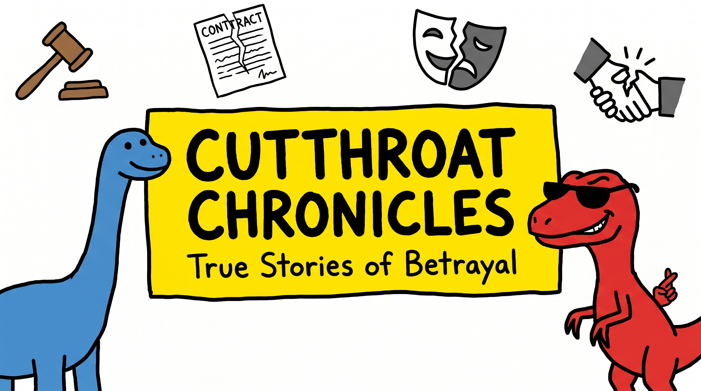
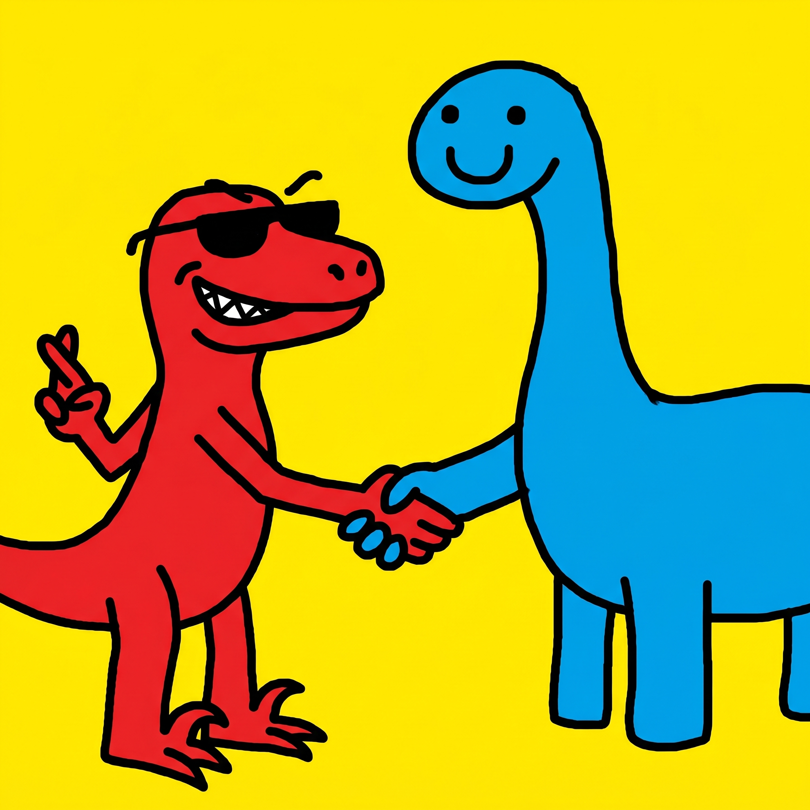

True stories of betrayal — friends, business partners, families, and empires.
Cutthroat Chronicles breaks down real history's most infamous falling-outs: the co-founder pushed out of the company he built, the best friend who flipped, the partner who walked away with everything, and the moments that quietly rewrote relationships, rules, and history forever. Each episode unpacks what really happened, why it happened, and what it cost everyone involved — told through simple, dead-pan animated storytelling that makes complex stories easy (and fun) to follow.
Watch on YouTube